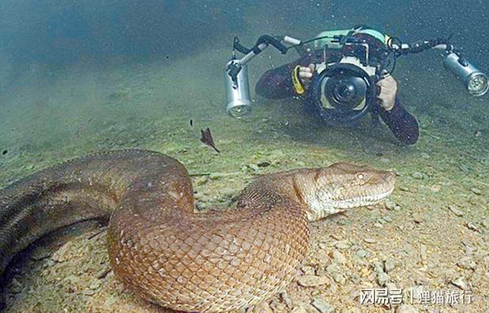
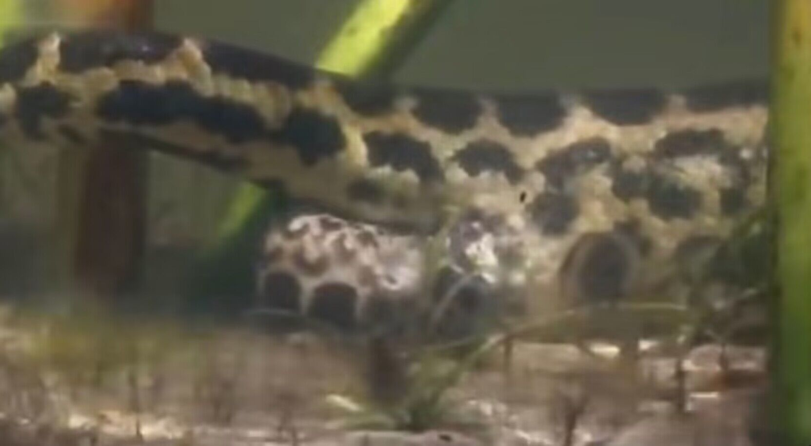

冒犯式拍法
这个方法可以说是最费摄影师的了，摄影师不穿戴任何防护设备，扛着摄像机就开拍。

摄影师在拍摄森蚺看这个对比图就能发现森蚺体型庞大，但它和蟒蛇并不是同一类生物。
森蚺是卵胎生（ovoviviparity）动物，而蟒蛇是卵生(oviparity)动物。

一条森蚺在生产森蚺宝宝摄影师能在仅穿戴潜水设备和携带摄像机的情况下拍摄森蚺，还是因为森蚺的“干饭”习惯。
森蚺只吃“伏击”而来的食物，而且不喜欢待在清水里，就喜欢生活在杂物多的沼泽死水中。
而且森蚺一顿饭可以“消化”几个月，所以只要遇到的不是已经饿了好几个月，正等着猎物送上门的森蚺，一般就不会有什么危险。